Review pack: AgentCore Runtime × Redshift × IAM Identity Center (OBO / 2LO / 3LO)
Generated 2026-10-05 16:38 HKT · account 383386985941 · 43 resources · 40 console screenshots · verification 29 PASS / 0 FAIL
All resources were deployed by the numbered, idempotent scripts in infra/ (01 → 13), in this order. For every step this pack lists what the script created, an AWS console screenshot per resource (exact URL and capture time shown under each image; open the URL to validate), and read-only verification commands run when the pack was built, with the expected pattern and the actual output. Functional test results (OBO 16/16 matrix, 2LO/3LO 18/18) are in RUNBOOK.md and tests/results-*.txt.
Summary (deployment order)
| Step | What was deployed | Resources | Screenshots | Checks |
|---|
| 1 | Runtime VPC with a fixed egress IP (ap-southeast-1) | 10 | 10 | 3 PASS |
| 2 | Cognito user pool (end-user IdP, admin-only users) | 3 | 3 | 2 PASS |
| 3 | IdC Trusted Token Issuer + Redshift IdC application | 4 | 4 | 2 PASS |
| 4 | Redshift cluster, network-restricted (ap-east-1) | 4 | 3 | 2 PASS |
| 5 | Seed data + grants to IdC group roles (SQL) | 2 | 0 | 2 PASS |
| 6 | OBO runtime execution role (no Redshift permissions) | 1 | 1 | 1 PASS |
| 7 | IdC customer-managed app for the agent's token exchange | 1 | 1 | 3 PASS |
| 8 | OBO data agent on AgentCore Runtime | 2 | 2 | 2 PASS |
| 9 | Cognito OAuth clients for 2LO / 3LO (same pool) | 4 | 5 | 3 PASS |
| 10 | AgentCore Identity credential providers | 2 | 3 | 2 PASS |
| 11 | 2LO downstream: Gateway → Lambda → Redshift service user | 6 | 5 | 3 PASS |
| 12 | Separate OAuth agent runtime (2LO / 3LO) | 3 | 2 | 3 PASS |
| 13 | Browser sign-in for the local web GUIs | 1 | 1 | 1 PASS |
Step 1: Runtime VPC with a fixed egress IP (ap-southeast-1)
Private subnets for the AgentCore Runtime ENIs; all egress goes through one NAT gateway with an Elastic IP, so Redshift can allowlist exactly one IP for the agent.
IaC / script: infra/01-runtime-network.sh
Deploy command: infra/run.sh ./infra/01-runtime-network.sh
Deployed resources
| Type | ID / ARN | Name |
|---|
| AWS::EC2::VPC | vpc-040e99e21800a355c | rsidc-rt-vpc 10.50.0.0/16 |
| AWS::EC2::InternetGateway | igw-058dcc1a883a5afb2 | rsidc-rt-igw |
| AWS::EC2::Subnet | subnet-0fd4195de9bdffba9 | public 10.50.0.0/24 |
| AWS::EC2::Subnet | subnet-0bf130ed318f05d66 | private 10.50.1.0/24 |
| AWS::EC2::Subnet | subnet-0a3ac30526d744713 | private 10.50.2.0/24 |
| AWS::EC2::RouteTable | rtb-0f37a8edf400fa73c | public → IGW |
| AWS::EC2::RouteTable | rtb-0316eeecb91a0b588 | private → NAT |
| AWS::EC2::EIP | eipalloc-08e9ba07612e963ca | 47.131.152.68 |
| AWS::EC2::NatGateway | nat-042a3797afe93a19f | rsidc-rt-nat |
| AWS::EC2::SecurityGroup | sg-03bd7cebf86c77315 | rsidc-runtime-sg (egress only) |
Console: VPC rsidc-rt-vpc 10.50.0.0/16 (runtime network)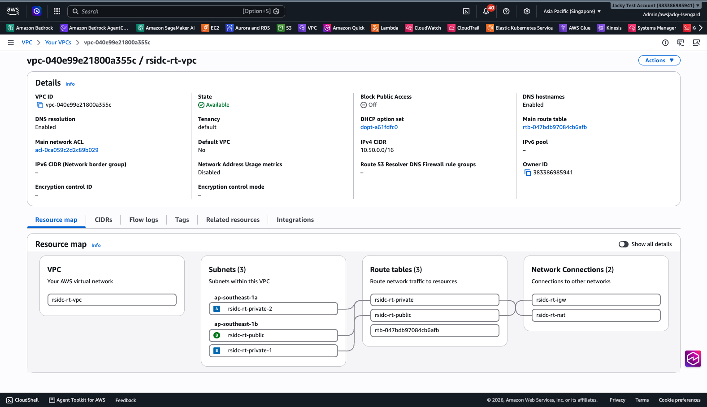
Console: Internet gateway attached to rsidc-rt-vpc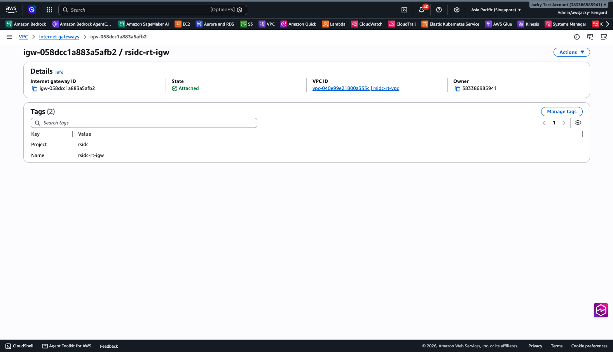
Console: Public subnet 10.50.0.0/24 (apse1-az1) for the NAT gateway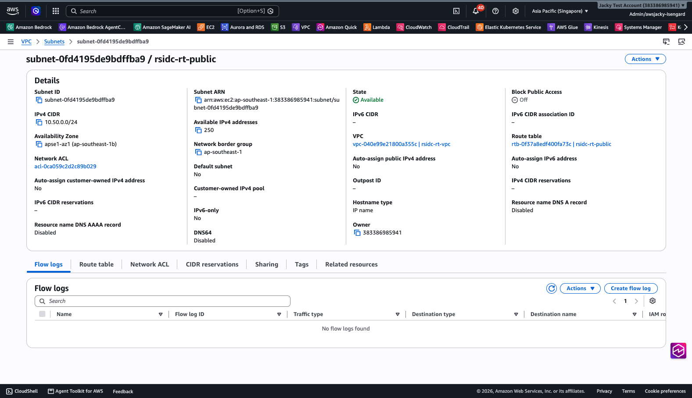
Console: Private subnet 1 10.50.1.0/24 (apse1-az1) for runtime ENIs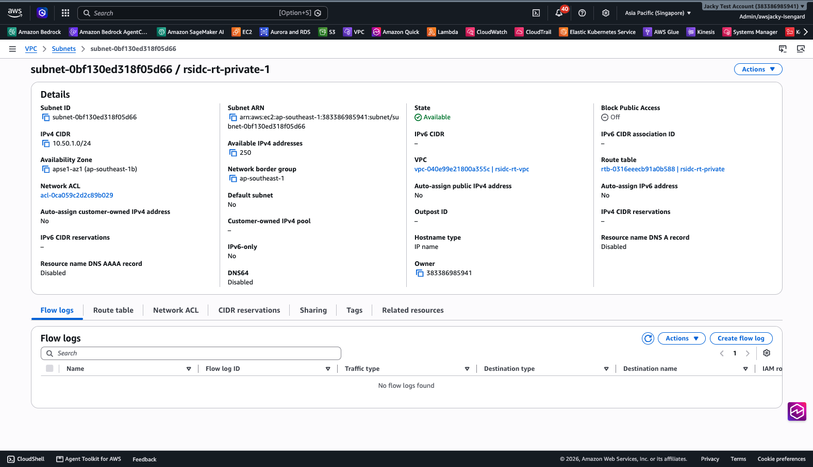
Console: Private subnet 2 10.50.2.0/24 (apse1-az2) for runtime ENIs
Console: Public route table: 0.0.0.0/0 → internet gateway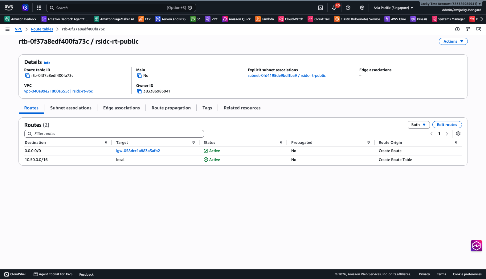
Console: Private route table: 0.0.0.0/0 → NAT gateway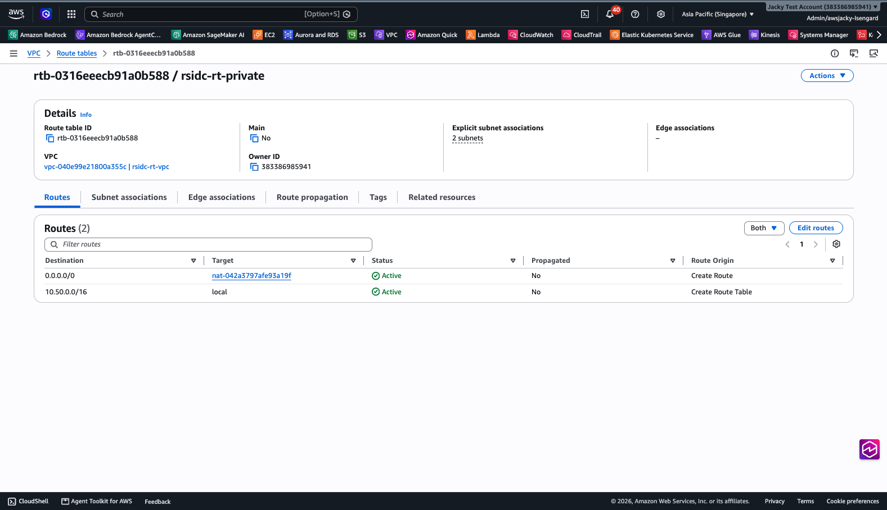
Console: Elastic IP 47.131.152.68 (the runtime's only egress IP)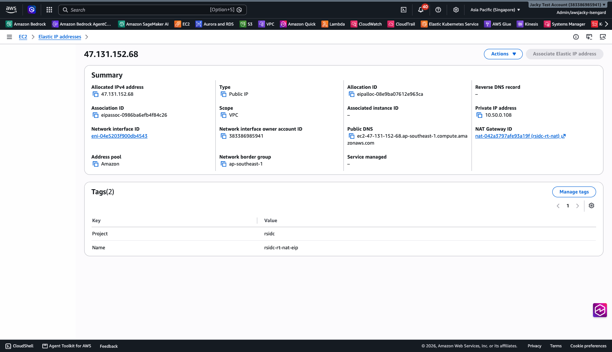
Console: NAT gateway rsidc-rt-nat (public, EIP 47.131.152.68)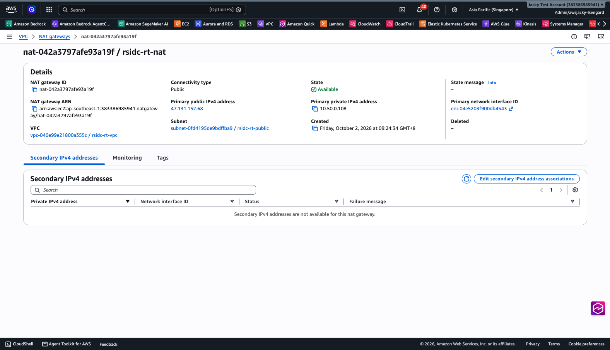
Console: Runtime security group: no inbound rules (egress only)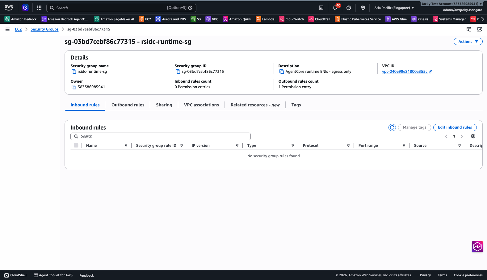
Verification
| Check | Command | Expected | Result |
|---|
| NAT available with the EIP | aws ec2 describe-nat-gateways --region $RT_REGION --nat-gateway-ids $RT_NAT_ID --query 'NatGateways[0].[State,NatGatewayAddresses[0].PublicIp]' --output text | available\s+47\.131\.152\.68 | PASS |
| private subnets route to NAT | aws ec2 describe-route-tables --region $RT_REGION --route-table-ids $RT_PRIV_RTB --query 'RouteTables[0].Routes[?DestinationCidrBlock==`0.0.0.0/0`].NatGatewayId' --output text | nat-042a3797afe93a19f | PASS |
| runtime SG has no inbound rules | aws ec2 describe-security-groups --region $RT_REGION --group-ids $RT_SG_ID --query 'length(SecurityGroups[0].IpPermissions)' | ^0$ | PASS |
Actual output: NAT available with the EIP
available 47.131.152.68
Actual output: private subnets route to NAT
nat-042a3797afe93a19f
Actual output: runtime SG has no inbound rules
0
Step 2: Cognito user pool (end-user IdP, admin-only users)
Cognito issues the users' ID tokens (JWT). Users are admin-created with emails that mirror IAM Identity Center users; self sign-up is disabled because email is the identity mapping key.
IaC / script: infra/02-cognito.sh
Deploy command: infra/run.sh ./infra/02-cognito.sh
Deployed resources
| Type | ID / ARN | Name |
|---|
| AWS::Cognito::UserPool | ap-southeast-1_kSVpAo5yl | rsidc-users |
| AWS::Cognito::UserPoolClient | kff7mg63m7d94n6f2euip41na | rsidc-agent-client (OBO) |
| AWS::Cognito::UserPoolUser | wei, zhang, chen, ds1 | test personas |
Console: Cognito pool rsidc-users: 4 admin-created users, verified emails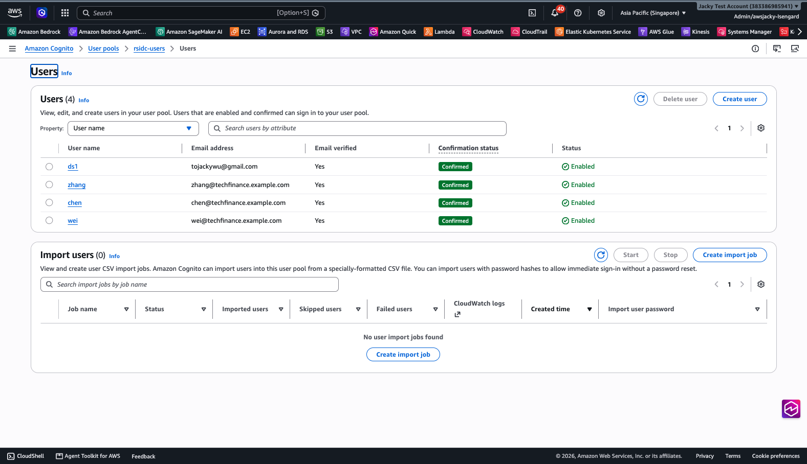
Console: Self-registration = Disabled (admin-only user creation)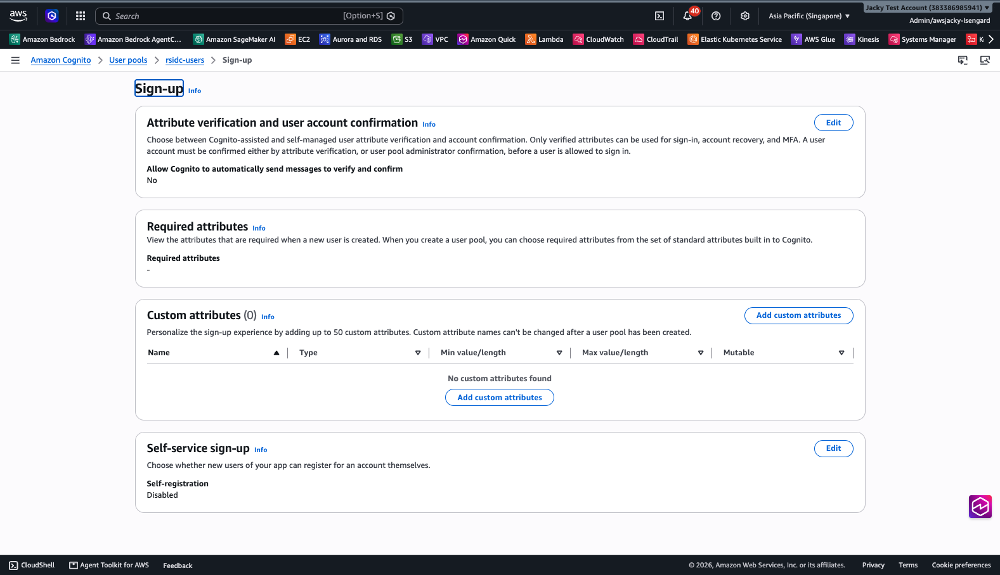
Console: OBO app client rsidc-agent-client (public, USER_PASSWORD_AUTH; its ID is the JWT audience)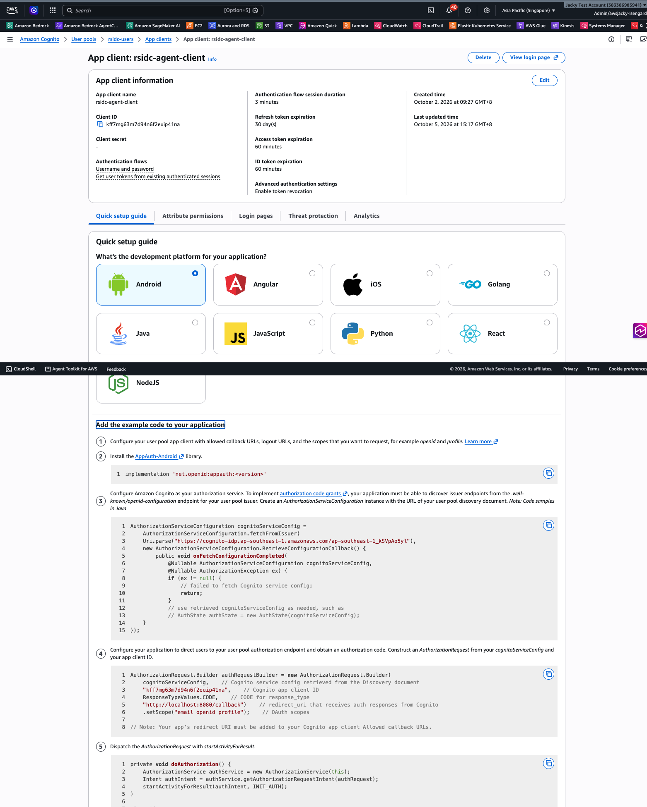
part 1/2
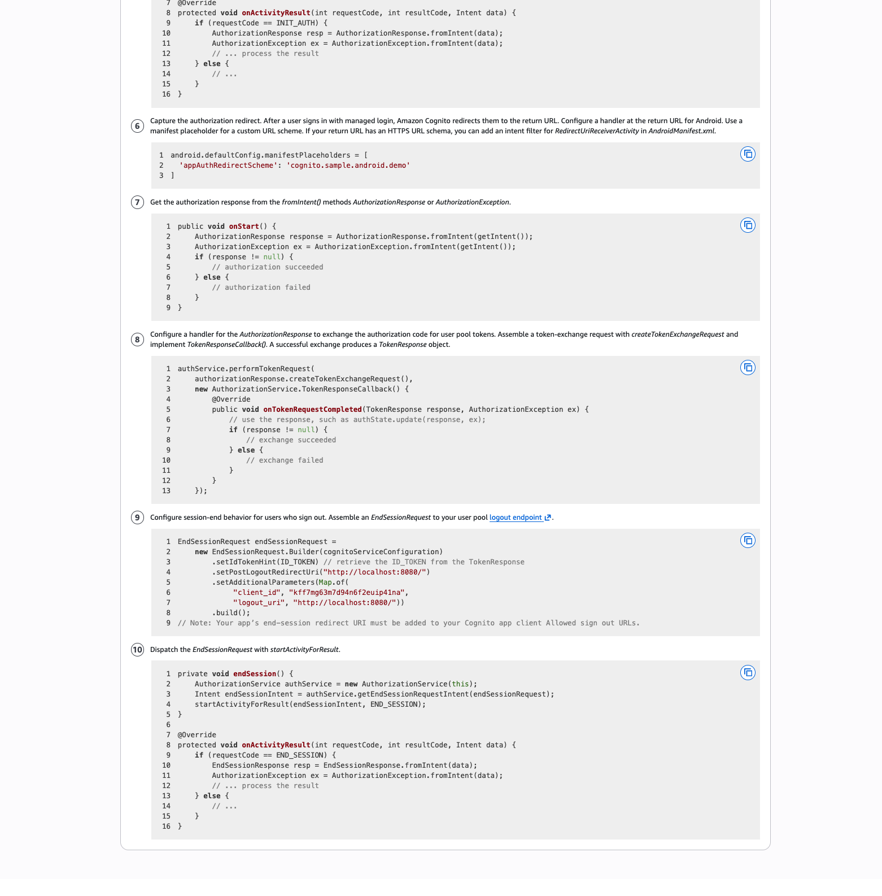
part 2/2
Verification
| Check | Command | Expected | Result |
|---|
| admin-only user creation | aws cognito-idp describe-user-pool --region $RT_REGION --user-pool-id $COGNITO_POOL_ID --query UserPool.AdminCreateUserConfig.AllowAdminCreateUserOnly | true | PASS |
| 4 confirmed users | aws cognito-idp list-users --region $RT_REGION --user-pool-id $COGNITO_POOL_ID --query 'length(Users[?UserStatus==`CONFIRMED`])' | ^4$ | PASS |
Actual output: admin-only user creation
true
Actual output: 4 confirmed users
4
Step 3: IdC Trusted Token Issuer + Redshift IdC application
The TTI tells IAM Identity Center to trust JWTs signed by the Cognito pool and maps the email claim to the IdC user's emails.value. The Redshift IdC application (namespace AWSIDC) accepts that TTI for audience = the OBO client.
IaC / script: infra/03-idc-redshift-app.sh
Deploy command: infra/run.sh ./infra/03-idc-redshift-app.sh
Deployed resources
| Type | ID / ARN | Name |
|---|
| AWS::SSO::TrustedTokenIssuer | arn:aws:sso::383386985941:trustedTokenIssuer/ssoins-715869a9a6444dc5/tti-54429cde-c0b0-70e4-eeec-ba89c6508f18 | rsidc-cognito |
| AWS::IAM::Role | arn:aws:iam::383386985941:role/rsidc-redshift-idc-role | rsidc-redshift-idc-role |
| AWS::Redshift::IdcApplication | arn:aws:redshift:ap-east-1:383386985941:redshiftidcapplication:291c5e1f-f78a-45ef-9312-a430cdf65fbb | rsidc-redshift (AWSIDC) |
| AWS::SSO::Application | arn:aws:sso::383386985941:application/ssoins-715869a9a6444dc5/apl-7158c218c69d902a | IdC-managed app for Redshift |
Console: IdC Settings → Authentication → Trusted token issuer rsidc-cognito (Cognito issuer, email → emails.value)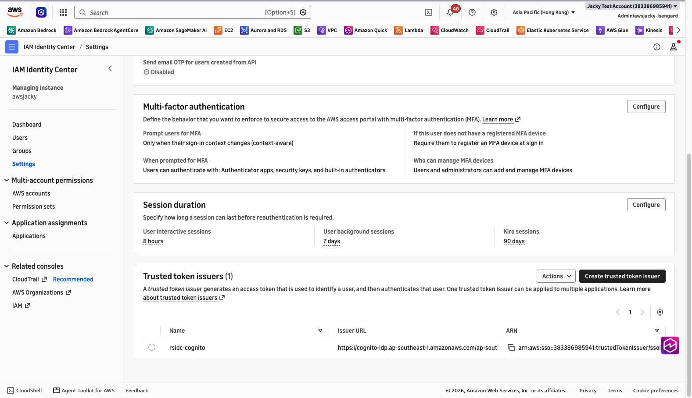
Console: IAM role used by the Redshift IdC application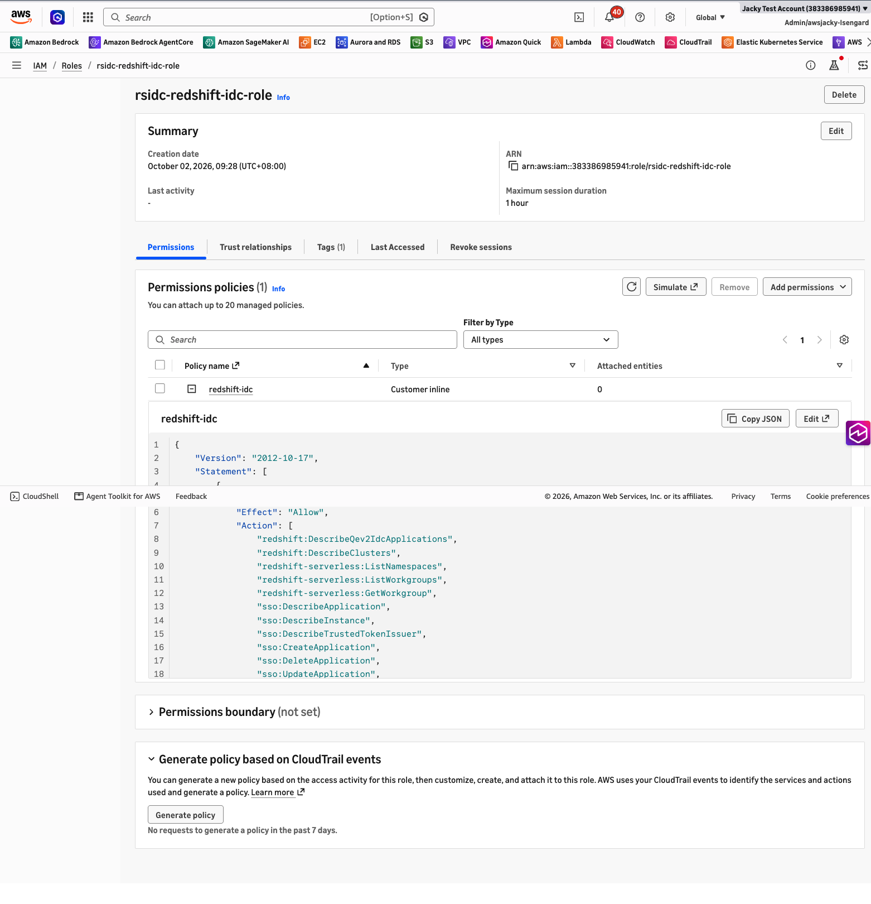
Console: IdC → Applications (AWS managed): rsidc-redshift
Console: Redshift → IAM Identity Center connections: rsidc-redshift (namespace AWSIDC, token issuer = Cognito TTI)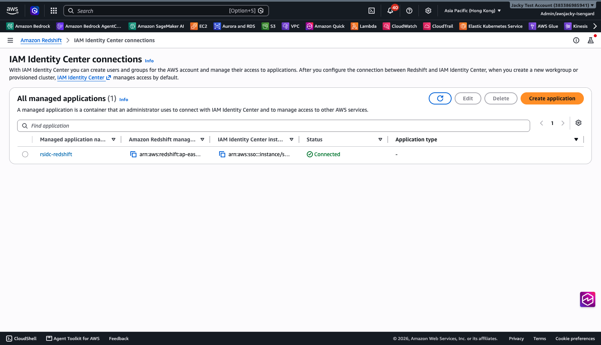
Verification
| Check | Command | Expected | Result |
|---|
| TTI issuer + claim mapping | aws sso-admin describe-trusted-token-issuer --region $IDC_REGION --trusted-token-issuer-arn $TTI_ARN --query TrustedTokenIssuerConfiguration.OidcJwtConfiguration | ap-southeast-1_kSVpAo5yl.*"ClaimAttributePath": "email".*"emails.value" | PASS |
| Redshift IdC app trusts the TTI for the OBO audience | aws redshift describe-redshift-idc-applications --region $IDC_REGION --redshift-idc-application-arn $REDSHIFT_IDC_APP_ARN --query 'RedshiftIdcApplications[0].[IdentityNamespace,IdcOnboardStatus,AuthorizedTokenIssuerList[0].AuthorizedAudiencesList[0]]' --output text | AWSIDC\s+Completed\s+kff7mg63m7d94n6f2euip41na | PASS |
Actual output: TTI issuer + claim mapping
{
"IssuerUrl": "https://cognito-idp.ap-southeast-1.amazonaws.com/ap-southeast-1_kSVpAo5yl",
"ClaimAttributePath": "email",
"IdentityStoreAttributePath": "emails.value",
"JwksRetrievalOption": "OPEN_ID_DISCOVERY"
}Actual output: Redshift IdC app trusts the TTI for the OBO audience
AWSIDC Completed kff7mg63m7d94n6f2euip41na
Step 4: Redshift cluster, network-restricted (ap-east-1)
ra3.large single node attached to the IdC application. Port 5439 is open only to the operator workstation egress IPs and the runtime NAT EIP; no egress rules. The admin password is managed by Secrets Manager.
IaC / script: infra/04-redshift-cluster.sh
Deploy command: infra/run.sh ./infra/04-redshift-cluster.sh
Deployed resources
| Type | ID / ARN | Name |
|---|
| AWS::EC2::SecurityGroup | sg-04a28577466e150f5 | rsidc-redshift-sg |
| AWS::Redshift::ClusterSubnetGroup | rsidc-subnets | default VPC subnets |
| AWS::Redshift::Cluster | rsidc-cluster | rsidc-cluster.c4lxyavyzchh.ap-east-1.redshift.amazonaws.com |
| AWS::SecretsManager::Secret | arn:aws:secretsmanager:ap-east-1:383386985941:secret:redshift!rsidc-cluster-rsadmin-JJNks2 | managed admin password |
Console: Redshift security group: exactly 3 inbound /32 on 5439, 0 outbound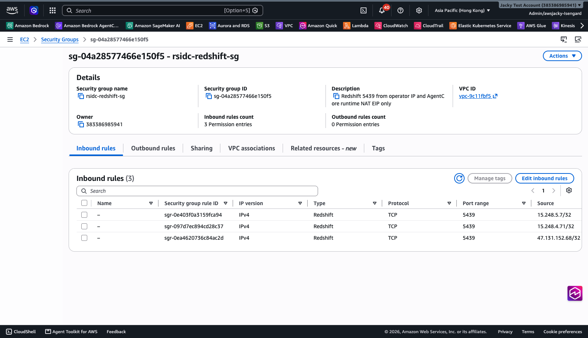
Console: Redshift cluster rsidc-cluster (ra3.large, encrypted, IdC connection)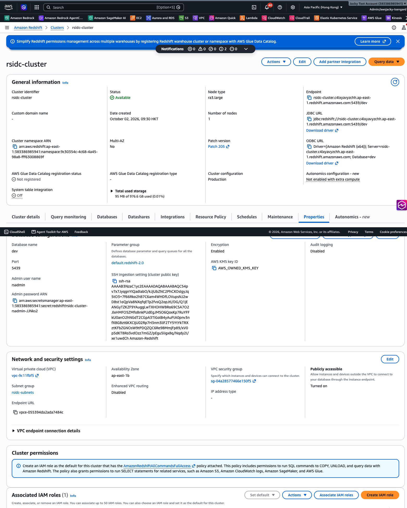
part 1/2
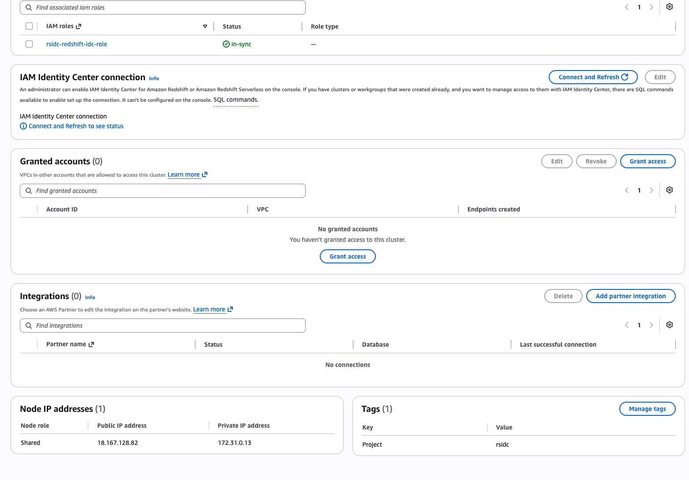
part 2/2
Console: Admin password managed by Secrets Manager (value not shown)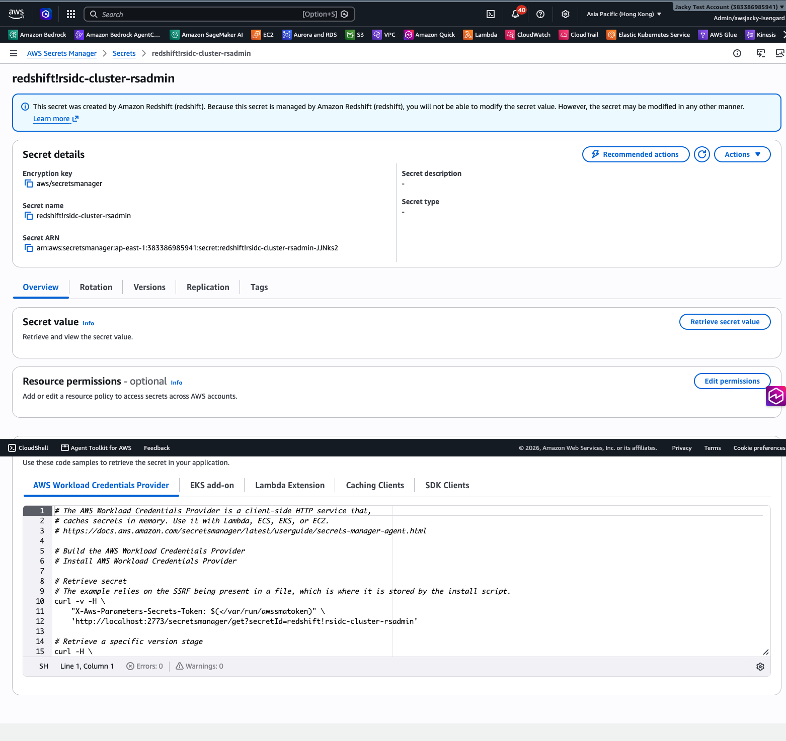
Verification
| Check | Command | Expected | Result |
|---|
| SG ingress = 3 × /32 on 5439, no 0.0.0.0/0 | aws ec2 describe-security-groups --region $IDC_REGION --group-ids $RS_SG_ID --query 'SecurityGroups[0].IpPermissions[].IpRanges[].CidrIp' --output text | tr '\t' '\n' | sort | tr '\n' ' ' | ^15\.248\.4\.71/32 15\.248\.5\.7/32 47\.131\.152\.68/32\s*$ | PASS |
| cluster available, encrypted, IdC-attached | aws redshift describe-clusters --region $IDC_REGION --cluster-identifier rsidc-cluster --query 'Clusters[0].[ClusterStatus,NodeType,Encrypted,length(IamRoles)]' --output text | available\s+ra3.large\s+True\s+1 | PASS |
Actual output: SG ingress = 3 × /32 on 5439, no 0.0.0.0/0
15.248.4.71/32 15.248.5.7/32 47.131.152.68/32
Actual output: cluster available, encrypted, IdC-attached
available ra3.large True 1
Step 5: Seed data + grants to IdC group roles (SQL)
Tables in dev (sales.orders, marketing.campaigns, risk.credit_limits), roles AWSIDC:<group>, table/column grants and RLS. No console page; verified with the Redshift Data API (read-only SELECT).
IaC / script: infra/sql/01-seed-and-grants.sql
Deploy command: infra/run.sh agent/.venv/bin/python infra/05-seed-redshift.py
Deployed resources
| Type | ID / ARN | Name |
|---|
| Redshift schema/table | dev.sales.orders / dev.marketing.campaigns / dev.risk.credit_limits | 5 + 2 + 2 rows |
| Redshift role | AWSIDC:risk-team, marketing-team, platform-team, data-scientists | grants + RLS |
Verification
| Check | Command | Expected | Result |
|---|
| IdC group roles exist | agent/.venv/bin/python -c "import os,time,boto3;c=boto3.Session(profile_name='default').client('redshift-data',region_name=os.environ['IDC_REGION']);i=c.execute_statement(ClusterIdentifier='rsidc-cluster',Database='dev',SecretArn=os.environ['REDSHIFT_ADMIN_SECRET_ARN'],Sql=\"SELECT role_name FROM svv_roles WHERE role_name LIKE 'AWSIDC:%' ORDER BY 1\")['Id']
while c.describe_statement(Id=i)['Status'] not in ('FINISHED','FAILED'): time.sleep(.5)
print(' '.join(r[0]['stringValue'] for r in c.get_statement_result(Id=i)['Records']))" | AWSIDC:data-scientists AWSIDC:marketing-team AWSIDC:platform-team AWSIDC:risk-team | PASS |
| RLS enabled on sales.orders | agent/.venv/bin/python -c "import os,time,boto3;c=boto3.Session(profile_name='default').client('redshift-data',region_name=os.environ['IDC_REGION']);i=c.execute_statement(ClusterIdentifier='rsidc-cluster',Database='dev',SecretArn=os.environ['REDSHIFT_ADMIN_SECRET_ARN'],Sql=\"SELECT relschema, relname, is_rls_on FROM svv_rls_relation WHERE relname='orders'\")['Id']
while c.describe_statement(Id=i)['Status'] not in ('FINISHED','FAILED'): time.sleep(.5)
print(c.get_statement_result(Id=i)['Records'])" | 'sales'.*'orders'.*'stringValue': 't' | PASS |
Actual output: IdC group roles exist
AWSIDC:data-scientists AWSIDC:marketing-team AWSIDC:platform-team AWSIDC:risk-team
Actual output: RLS enabled on sales.orders
[[{'stringValue': 'sales'}, {'stringValue': 'orders'}, {'stringValue': 't'}]]Step 6: OBO runtime execution role (no Redshift permissions)
Role assumed by the OBO runtime. It can call Bedrock, write logs, use its workload identity, and (added in step 7) exchange tokens at one IdC application. It has no redshift:* permission.
IaC / script: infra/06-runtime-role.sh + infra/policies/agent-runtime-permissions.json
Deploy command: infra/run.sh ./infra/06-runtime-role.sh
Deployed resources
| Type | ID / ARN | Name |
|---|
| AWS::IAM::Role | arn:aws:iam::383386985941:role/rsidc-agent-runtime-role | rsidc-agent-runtime-role |
Console: OBO runtime role: Bedrock, logs, workload identity, CreateTokenWithIAM on one IdC app; no redshift:*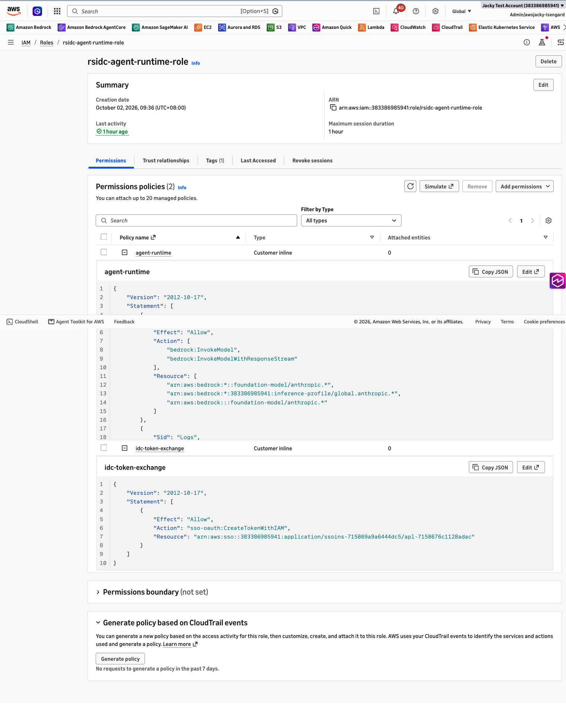
part 1/2
part 2/2
Verification
| Check | Command | Expected | Result |
|---|
| no redshift actions in any inline policy | for p in $(aws iam list-role-policies --role-name rsidc-agent-runtime-role --query PolicyNames --output text); do aws iam get-role-policy --role-name rsidc-agent-runtime-role --policy-name $p --query PolicyDocument; done | grep -c 'redshift:' ; true | ^0$ | PASS |
Actual output: no redshift actions in any inline policy
0
Step 7: IdC customer-managed app for the agent's token exchange
rsidc-data-agent has a jwt-bearer grant trusting the Cognito TTI (audience = OBO client), scope redshift:connect, required group assignment, and an ActorPolicy that allows only the OBO runtime role and explicitly denies every other principal.
IaC / script: infra/07-idc-agent-app.sh
Deploy command: infra/run.sh ./infra/07-idc-agent-app.sh
Deployed resources
| Type | ID / ARN | Name |
|---|
| AWS::SSO::Application | arn:aws:sso::383386985941:application/ssoins-715869a9a6444dc5/apl-7158676c1128adac | rsidc-data-agent |
Console: IdC customer-managed app rsidc-data-agent: TTI configured, 4 groups, trusted for AWS Redshift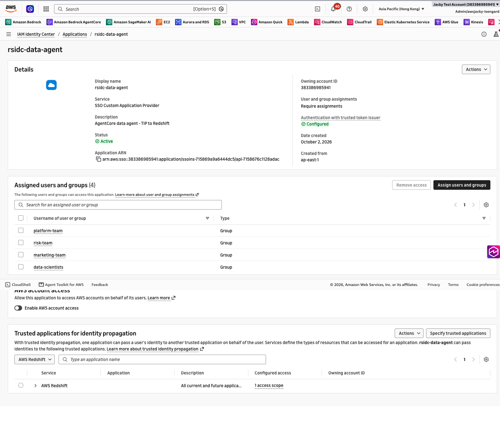
Verification
| Check | Command | Expected | Result |
|---|
| jwt-bearer grant → Cognito TTI, OBO audience | aws sso-admin get-application-grant --region $IDC_REGION --application-arn $AGENT_IDC_APP_ARN --grant-type urn:ietf:params:oauth:grant-type:jwt-bearer --query 'Grant.JwtBearer.AuthorizedTokenIssuers[0].AuthorizedAudiences[0]' --output text | kff7mg63m7d94n6f2euip41na | PASS |
| ActorPolicy: Allow runtime role + Deny everyone else | aws sso-admin get-application-authentication-method --region $IDC_REGION --application-arn $AGENT_IDC_APP_ARN --authentication-method-type IAM --query 'AuthenticationMethod.Iam.ActorPolicy.Statement[].[Effect,Sid]' --output text | Allow.*Deny\s+DenyEveryoneElseIncludingAdmins | PASS |
| scope redshift:connect | aws sso-admin list-application-access-scopes --region $IDC_REGION --application-arn $AGENT_IDC_APP_ARN --query 'Scopes[].Scope' --output text | redshift:connect | PASS |
Actual output: jwt-bearer grant → Cognito TTI, OBO audience
kff7mg63m7d94n6f2euip41na
Actual output: ActorPolicy: Allow runtime role + Deny everyone else
Allow None
Deny DenyEveryoneElseIncludingAdmins
Actual output: scope redshift:connect
redshift:connect
Step 8: OBO data agent on AgentCore Runtime
Direct code deploy (zip in S3). VPC mode in the private subnets, JWT inbound auth (Cognito discovery, audience = OBO client), Authorization header forwarded to the agent.
IaC / script: infra/08-deploy-runtime.sh + agent/
Deploy command: infra/run.sh ./infra/08-deploy-runtime.sh
Deployed resources
| Type | ID / ARN | Name |
|---|
| AWS::S3::Bucket | rsidc-artifacts-383386985941-ap-southeast-1 | code bundles |
| AWS::BedrockAgentCore::Runtime | arn:aws:bedrock-agentcore:ap-southeast-1:383386985941:runtime/rsidc_data_agent-BoemCIApSW | rsidc_data_agent (v3) |
Console: S3 bucket with the runtime code bundles (agent/, agent_oauth/)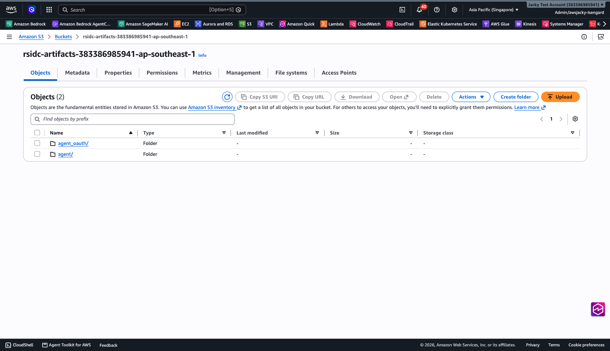
Console: OBO runtime rsidc_data_agent v3: JWT inbound (aud kff7mg63…), VPC, env vars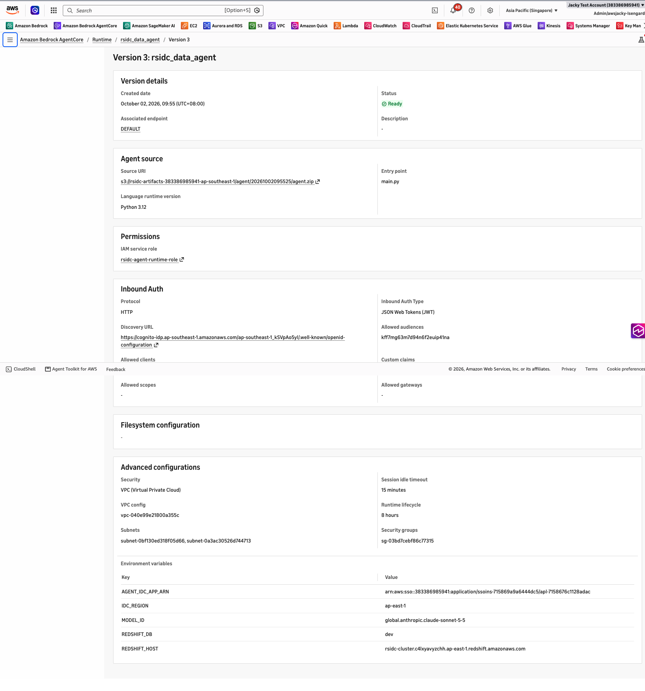
Verification
| Check | Command | Expected | Result |
|---|
| runtime READY, VPC, JWT audience, header allowlist | aws bedrock-agentcore-control get-agent-runtime --region $RT_REGION --agent-runtime-id $RT_ID --query '[status,agentRuntimeVersion,networkConfiguration.networkMode,authorizerConfiguration.customJWTAuthorizer.allowedAudience[0],requestHeaderConfiguration.requestHeaderAllowlist[0]]' --output text | READY\s+3\s+VPC\s+kff7mg63m7d94n6f2euip41na\s+Authorization | PASS |
| bucket blocks public access | aws s3api get-public-access-block --bucket rsidc-artifacts-383386985941-ap-southeast-1 --query 'PublicAccessBlockConfiguration.[BlockPublicAcls,BlockPublicPolicy,IgnorePublicAcls,RestrictPublicBuckets]' --output text | True\s+True\s+True\s+True | PASS |
Actual output: runtime READY, VPC, JWT audience, header allowlist
READY 3 VPC kff7mg63m7d94n6f2euip41na Authorization
Actual output: bucket blocks public access
True True True True
Step 9: Cognito OAuth clients for 2LO / 3LO (same pool)
Managed login domain (v2), resource server rsidc-reports/read, a confidential client_credentials client (2LO) and a confidential authorization-code client (3LO). The OBO client is unchanged here.
IaC / script: infra/09-cognito-oauth-clients.sh
Deploy command: infra/run.sh ./infra/09-cognito-oauth-clients.sh
Deployed resources
| Type | ID / ARN | Name |
|---|
| AWS::Cognito::UserPoolDomain | rsidc-383386985941 | managed login v2 |
| AWS::Cognito::UserPoolResourceServer | rsidc-reports | scope read |
| AWS::Cognito::UserPoolClient | 3lsr6jpphlql4hb8n1ge6a8sjp | rsidc-2lo-agent |
| AWS::Cognito::UserPoolClient | 4mrecmrv4divtcngq62to3run1 | rsidc-3lo-agent |
Console: Cognito managed login domain rsidc-383386985941 (Managed login v2)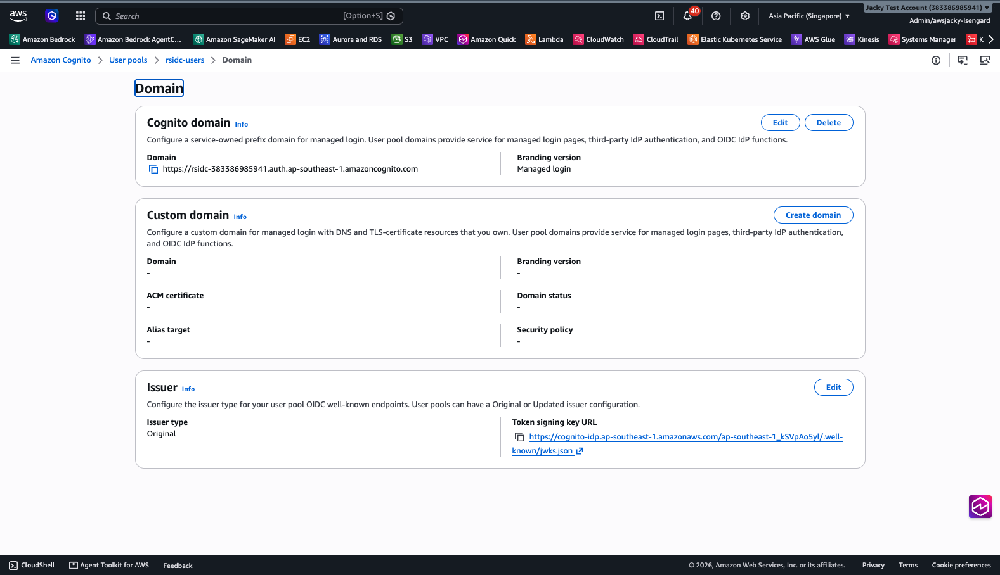
Console: Resource server rsidc-reports (scope read) for 2LO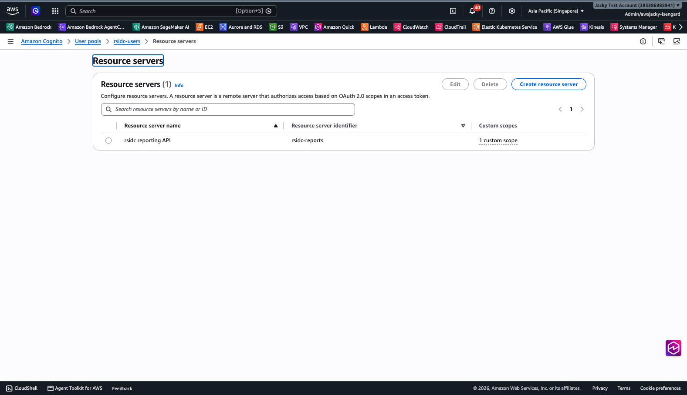
Console: App clients: OBO client, rsidc-2lo-agent, rsidc-3lo-agent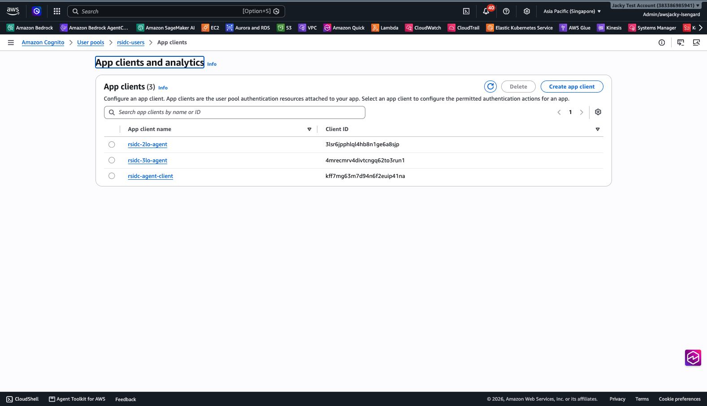
Console: 2LO client: client_credentials, scope rsidc-reports/read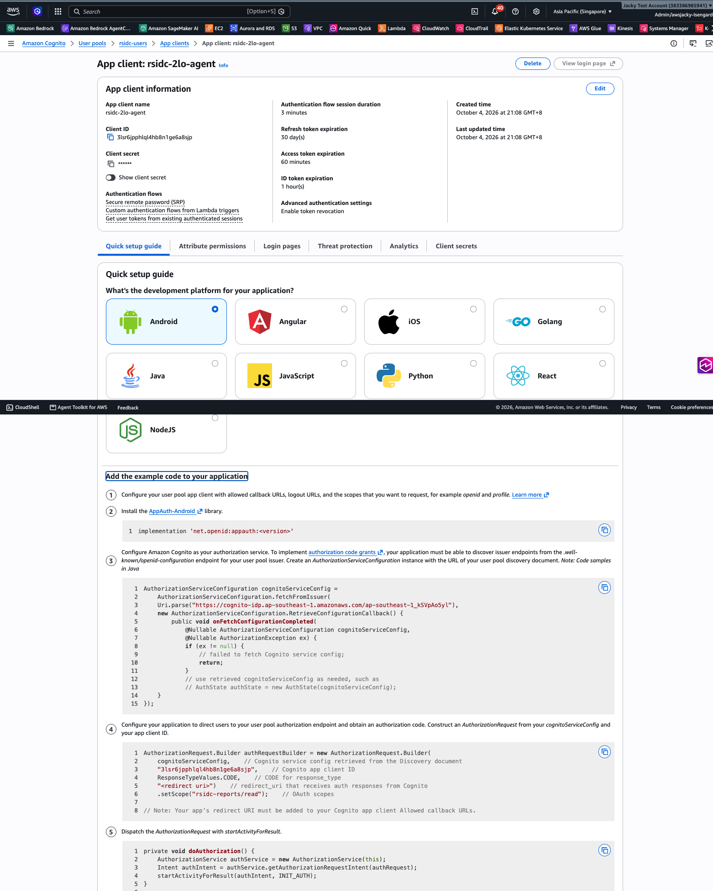
part 1/2
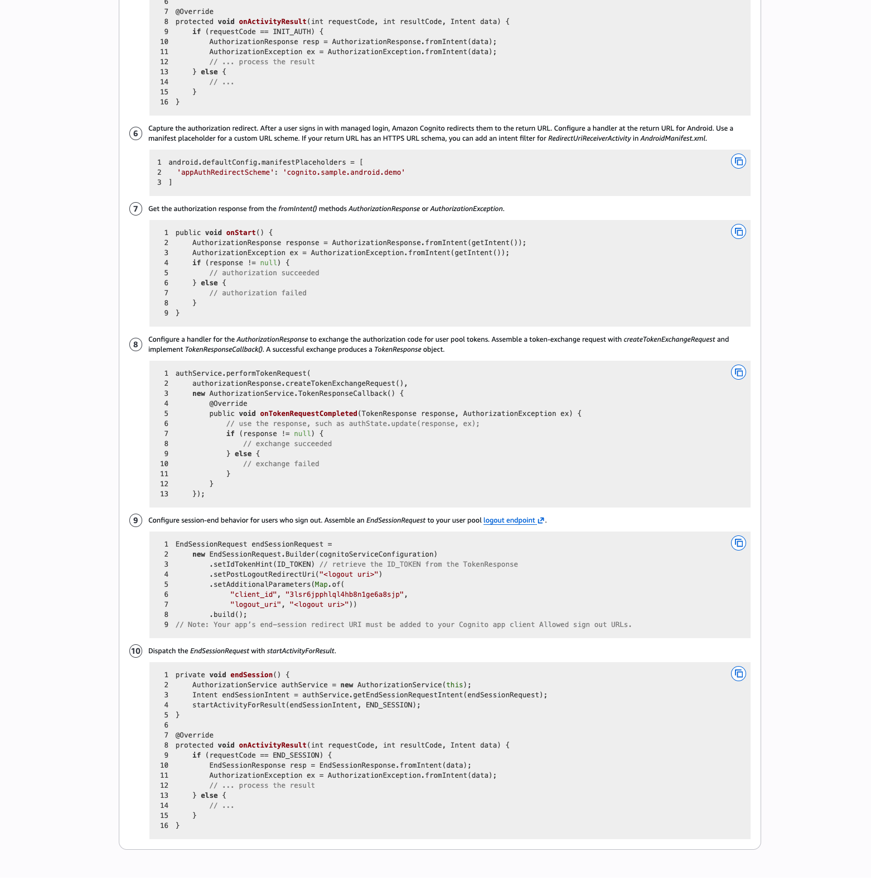
part 2/2
Console: 3LO client: authorization code, callback = AgentCore Identity callback URL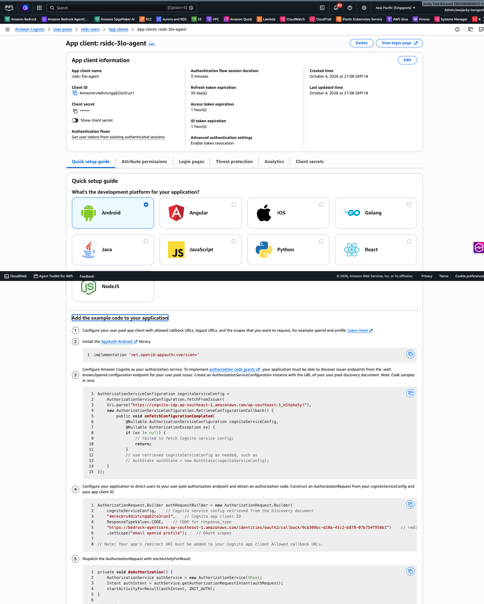
part 1/2
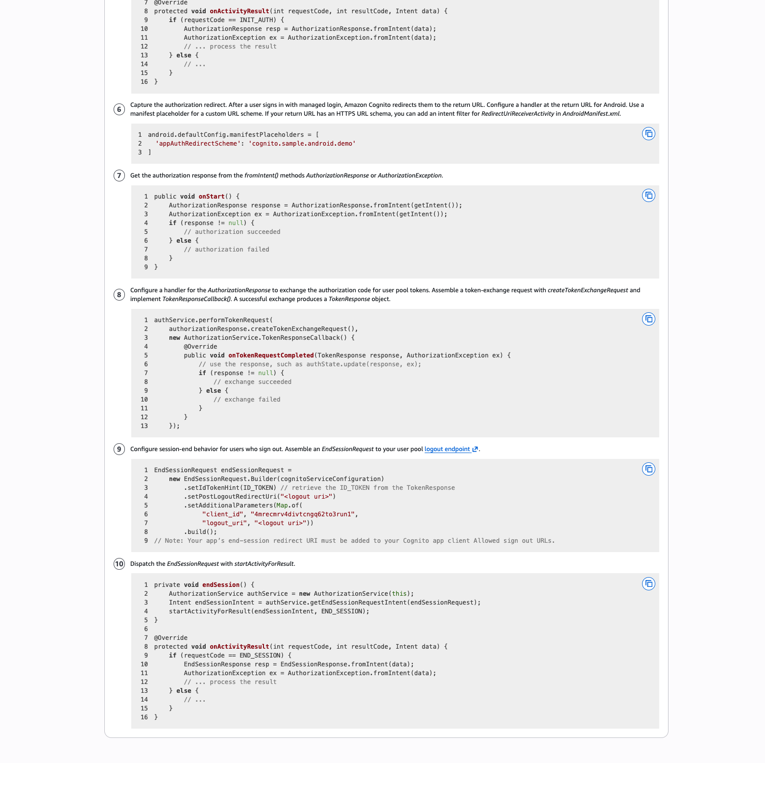
part 2/2
Verification
| Check | Command | Expected | Result |
|---|
| domain on managed login v2 | aws cognito-idp describe-user-pool-domain --region $RT_REGION --domain rsidc-383386985941 --query 'DomainDescription.[Status,ManagedLoginVersion]' --output text | ACTIVE\s+2 | PASS |
| 2LO client = client_credentials only | aws cognito-idp describe-user-pool-client --region $RT_REGION --user-pool-id $COGNITO_POOL_ID --client-id $C2LO_CLIENT_ID --query 'UserPoolClient.[AllowedOAuthFlows,AllowedOAuthScopes]' --output text | client_credentials\s+rsidc-reports/read | PASS |
| 3LO client callback = AgentCore Identity | aws cognito-idp describe-user-pool-client --region $RT_REGION --user-pool-id $COGNITO_POOL_ID --client-id $C3LO_CLIENT_ID --query 'UserPoolClient.[AllowedOAuthFlows[0],CallbackURLs[0]]' --output text | code\s+https://bedrock-agentcore.ap-southeast-1.amazonaws.com/identities/oauth2/callback/ | PASS |
Actual output: domain on managed login v2
ACTIVE 2
Actual output: 2LO client = client_credentials only
client_credentials
rsidc-reports/read
Actual output: 3LO client callback = AgentCore Identity
code https://bedrock-agentcore.ap-southeast-1.amazonaws.com/identities/oauth2/callback/9cb308bc-d10a-41c2-b878-07b754f958b1
Step 10: AgentCore Identity credential providers
Two CustomOauth2 providers backed by Cognito discovery: rsidc-2lo-cognito (M2M) and rsidc-3lo-cognito (user federation). Client secrets are held by AgentCore Identity (Secrets Manager, never printed).
IaC / script: infra/10-credential-providers.py
Deploy command: infra/run.sh agent/.venv/bin/python infra/10-credential-providers.py
Deployed resources
| Type | ID / ARN | Name |
|---|
| AWS::BedrockAgentCore::OAuth2CredentialProvider | arn:aws:bedrock-agentcore:ap-southeast-1:383386985941:token-vault/default/oauth2credentialprovider/rsidc-2lo-cognito | rsidc-2lo-cognito |
| AWS::BedrockAgentCore::OAuth2CredentialProvider | arn:aws:bedrock-agentcore:ap-southeast-1:383386985941:token-vault/default/oauth2credentialprovider/rsidc-3lo-cognito | rsidc-3lo-cognito |
Console: AgentCore Identity → Outbound Auth: rsidc-2lo-cognito, rsidc-3lo-cognito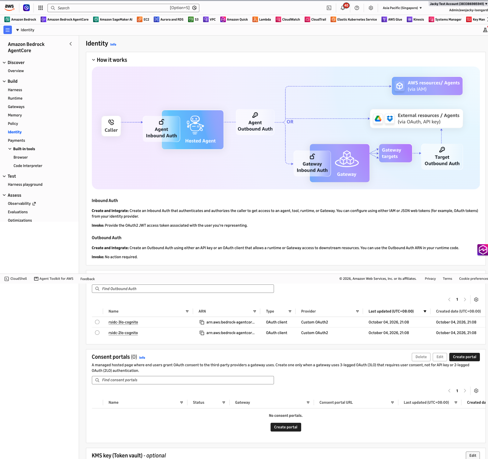
Console: Credential provider rsidc-2lo-cognito (Custom OAuth2, M2M)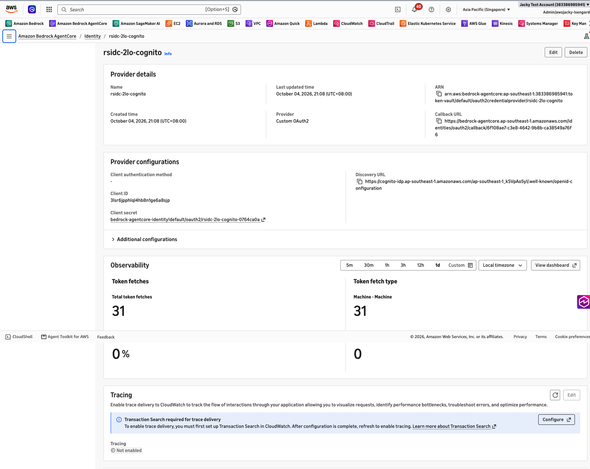
Console: Credential provider rsidc-3lo-cognito (Custom OAuth2, user federation)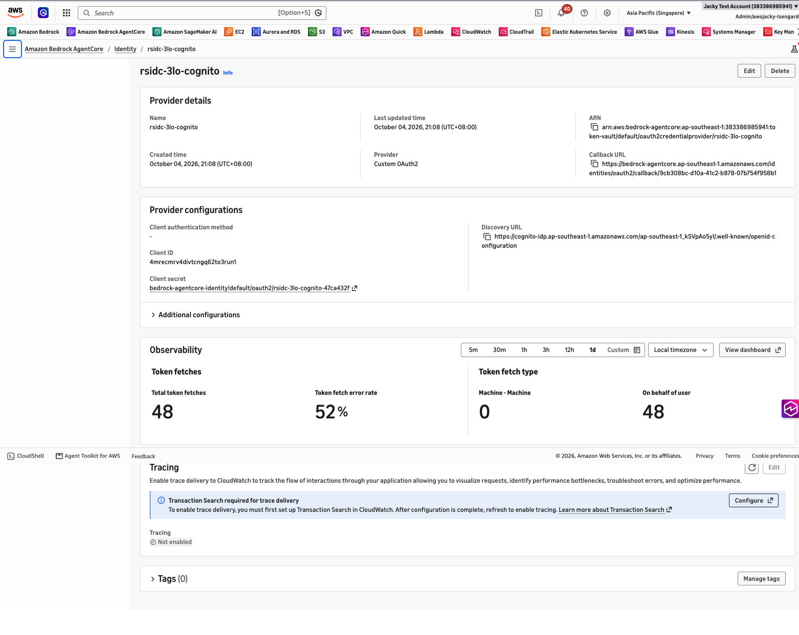
Verification
| Check | Command | Expected | Result |
|---|
| 2LO provider → 2LO client | aws bedrock-agentcore-control get-oauth2-credential-provider --region $RT_REGION --name rsidc-2lo-cognito --query '[status,credentialProviderVendor,oauth2ProviderConfigOutput.customOauth2ProviderConfig.clientId]' --output text | READY\s+CustomOauth2\s+3lsr6jpphlql4hb8n1ge6a8sjp | PASS |
| 3LO provider → 3LO client | aws bedrock-agentcore-control get-oauth2-credential-provider --region $RT_REGION --name rsidc-3lo-cognito --query '[status,oauth2ProviderConfigOutput.customOauth2ProviderConfig.clientId]' --output text | READY\s+4mrecmrv4divtcngq62to3run1 | PASS |
Actual output: 2LO provider → 2LO client
READY CustomOauth2 3lsr6jpphlql4hb8n1ge6a8sjp
Actual output: 3LO provider → 3LO client
READY 4mrecmrv4divtcngq62to3run1
Step 11: 2LO downstream: Gateway → Lambda → Redshift service user
DB user svc_reporting; Lambda that queries Redshift through the Data API as that user; AgentCore Gateway (MCP) whose JWT authorizer accepts only the 2LO client; target reporting invoked with the Gateway IAM role.
IaC / script: infra/11-2lo-gateway.sh + lambda/reporting/ + infra/sql/02-svc-reporting.sql
Deploy command: infra/run.sh ./infra/11-2lo-gateway.sh
Deployed resources
| Type | ID / ARN | Name |
|---|
| AWS::IAM::Role | rsidc-reporting-lambda-role | Data API as svc_reporting |
| AWS::Lambda::Function | arn:aws:lambda:ap-southeast-1:383386985941:function:rsidc-reporting | rsidc-reporting |
| AWS::IAM::Role | rsidc-gateway-role | invoke rsidc-reporting |
| AWS::BedrockAgentCore::Gateway | rsidc-2lo-gateway-mhss1cesvt | rsidc-2lo-gateway |
| AWS::BedrockAgentCore::GatewayTarget | DW1PNIOIAE | reporting (Lambda) |
| Redshift user | svc_reporting | SELECT sales.orders |
Console: Lambda role: GetClusterCredentials only for dbuser svc_reporting + Data API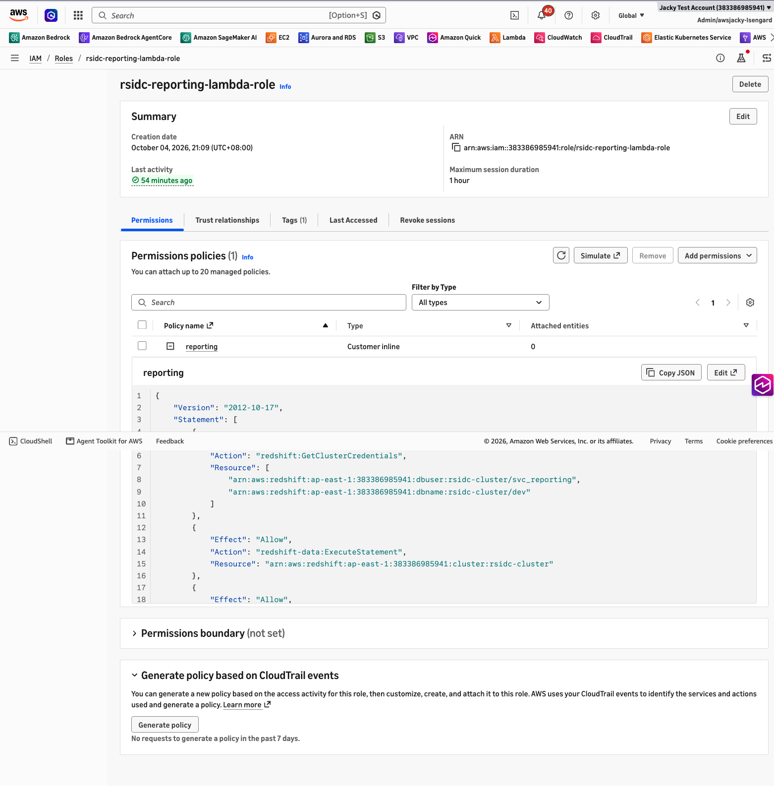
Console: Lambda rsidc-reporting (Gateway target; queries Redshift as svc_reporting)
Console: Gateway role: lambda:InvokeFunction on rsidc-reporting only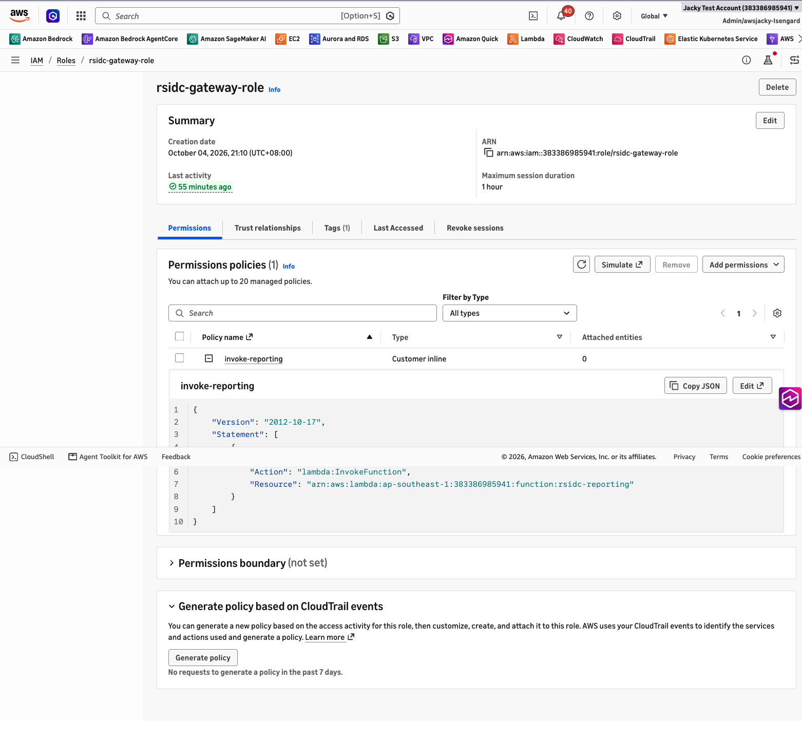
Console: AgentCore Gateway rsidc-2lo-gateway (MCP), target reporting → Lambda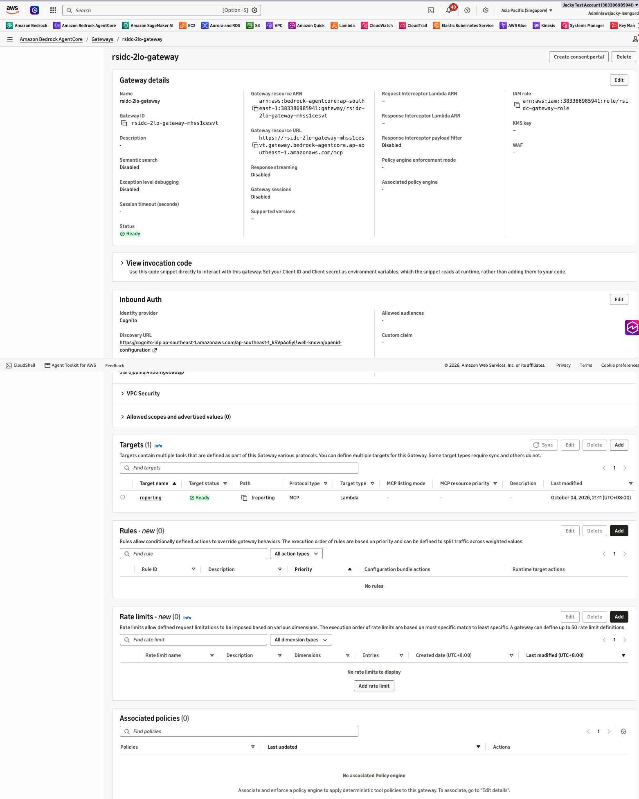
part 1/2
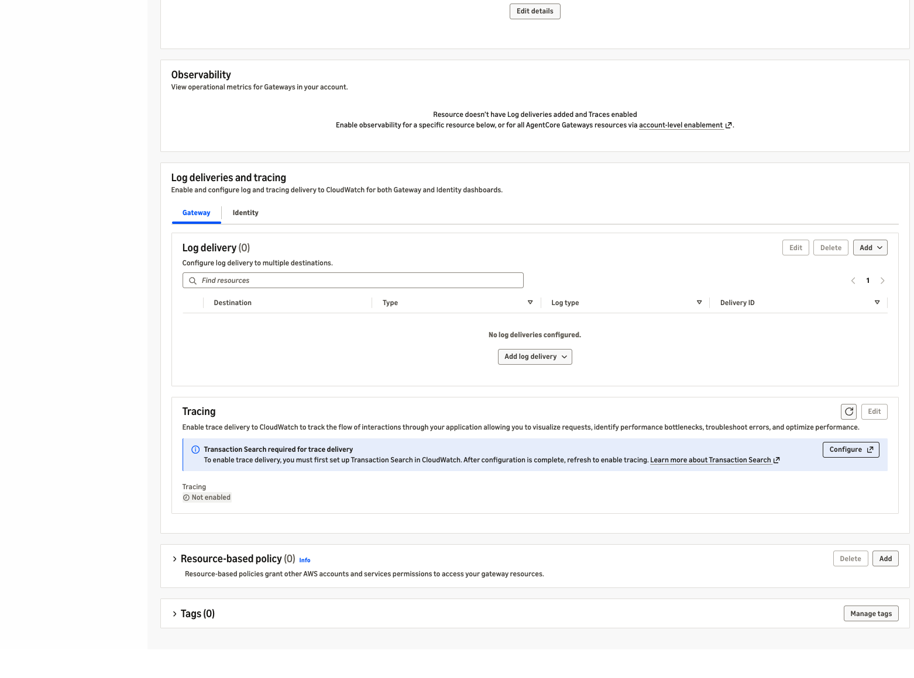
part 2/2
Console: Gateway Inbound Auth: Cognito, Allowed clients = 2LO client only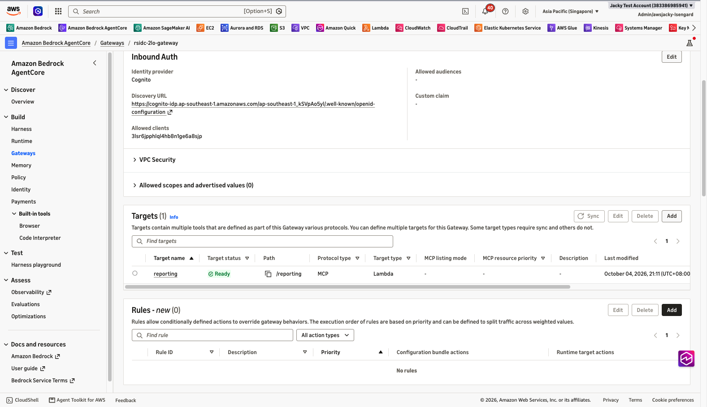
Verification
| Check | Command | Expected | Result |
|---|
| gateway READY, allowedClients = 2LO client | aws bedrock-agentcore-control get-gateway --region $RT_REGION --gateway-identifier $GW_ID --query '[status,protocolType,authorizerConfiguration.customJWTAuthorizer.allowedClients[0]]' --output text | READY\s+MCP\s+3lsr6jpphlql4hb8n1ge6a8sjp | PASS |
| target reporting READY | aws bedrock-agentcore-control list-gateway-targets --region $RT_REGION --gateway-identifier $GW_ID --query 'items[].[name,status]' --output text | reporting\s+READY | PASS |
| Lambda may impersonate only svc_reporting | aws iam get-role-policy --role-name rsidc-reporting-lambda-role --policy-name reporting --query 'PolicyDocument.Statement[0].Resource' --output text | dbuser:rsidc-cluster/svc_reporting | PASS |
Actual output: gateway READY, allowedClients = 2LO client
READY MCP 3lsr6jpphlql4hb8n1ge6a8sjp
Actual output: target reporting READY
reporting READY
Actual output: Lambda may impersonate only svc_reporting
arn:aws:redshift:ap-east-1:383386985941:dbuser:rsidc-cluster/svc_reporting arn:aws:redshift:ap-east-1:383386985941:dbname:rsidc-cluster/dev
Step 12: Separate OAuth agent runtime (2LO / 3LO)
rsidc_oauth_agent with its own role. The role grants GetResourceOauth2Token on the token vault, both credential providers and its own workload identity, plus read access to the two provider client secrets; this is what lets the runtime use rsidc-2lo-cognito / rsidc-3lo-cognito. The workload identity allowlists the 3LO return URLs.
IaC / script: infra/12-deploy-oauth-runtime.sh + agent_oauth/ + infra/policies/oauth-runtime-permissions.json
Deploy command: infra/run.sh ./infra/12-deploy-oauth-runtime.sh
Deployed resources
| Type | ID / ARN | Name |
|---|
| AWS::IAM::Role | arn:aws:iam::383386985941:role/rsidc-oauth-runtime-role | rsidc-oauth-runtime-role |
| AWS::BedrockAgentCore::Runtime | arn:aws:bedrock-agentcore:ap-southeast-1:383386985941:runtime/rsidc_oauth_agent-4lxrH9AmnT | rsidc_oauth_agent (v4) |
| AWS::BedrockAgentCore::WorkloadIdentity | rsidc_oauth_agent-4lxrH9AmnT | return URLs :8765 (tests), :8081 (GUI) |
Console: OAuth runtime role: GetResourceOauth2Token on token-vault + both providers + its workload identity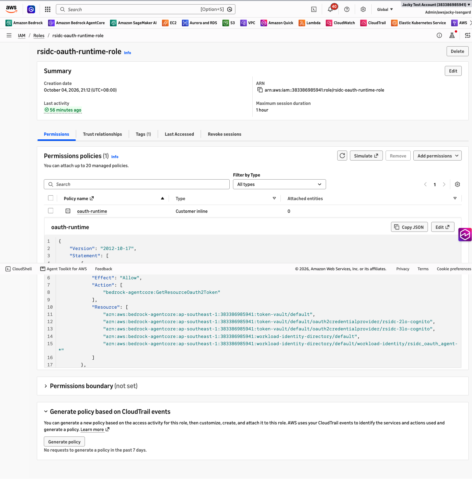
Console: OAuth runtime rsidc_oauth_agent v4: JWT inbound, VPC, env CP_2LO / CP_3LO / GW_URL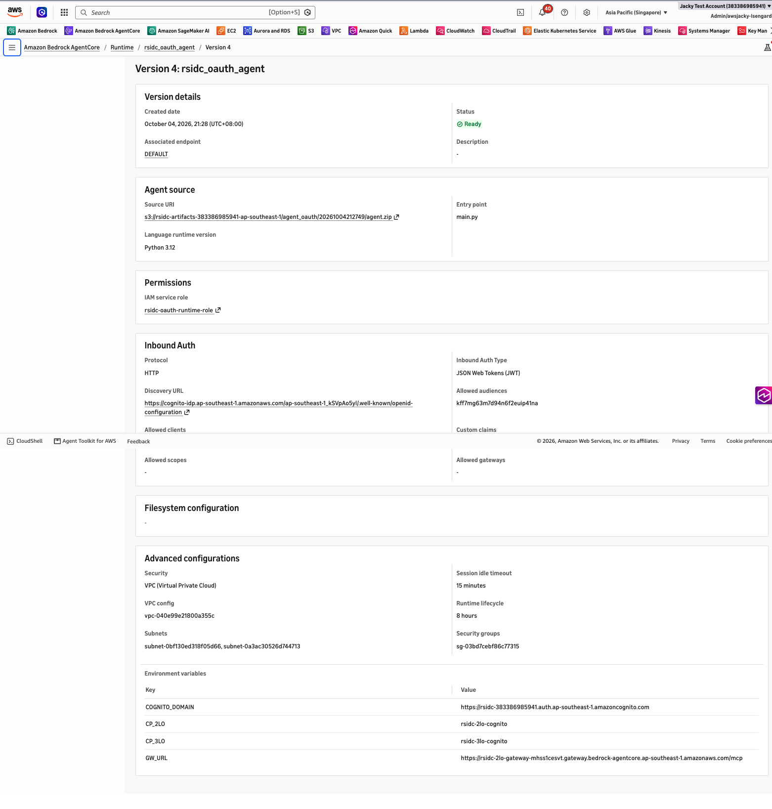
Verification
| Check | Command | Expected | Result |
|---|
| role grants GetResourceOauth2Token on the 2LO provider | aws iam get-role-policy --role-name rsidc-oauth-runtime-role --policy-name oauth-runtime --query 'PolicyDocument.Statement[?Sid==`OutboundOAuthTokens`].Resource[]' --output text | oauth2credentialprovider/rsidc-2lo-cognito | PASS |
| runtime READY with provider names in env | aws bedrock-agentcore-control get-agent-runtime --region $RT_REGION --agent-runtime-id $OAUTH_RT_ID --query '[status,environmentVariables.CP_2LO,environmentVariables.CP_3LO]' --output text | READY\s+rsidc-2lo-cognito\s+rsidc-3lo-cognito | PASS |
| workload identity return URLs | aws bedrock-agentcore-control get-workload-identity --region $RT_REGION --name $OAUTH_WI_NAME --query allowedResourceOauth2ReturnUrls --output text | localhost:8765/callback.*localhost:8081/3lo/callback|localhost:8081/3lo/callback.*localhost:8765/callback | PASS |
Actual output: role grants GetResourceOauth2Token on the 2LO provider
arn:aws:bedrock-agentcore:ap-southeast-1:383386985941:token-vault/default arn:aws:bedrock-agentcore:ap-southeast-1:383386985941:token-vault/default/oauth2credentialprovider/rsidc-2lo-cognito arn:aws:bedrock-agentcore:ap-southeast-1:383386985941:token-vault/default/oauth2credentialprovider/rsidc-3lo-cognito arn:aws:bedrock-agentcore:ap-southeast-1:383386985941:workload-identity-directory/default arn:aws:bedrock-agentcore:ap-southeast-1:383386985941:workload-identity-directory/default/workload-identity/rsidc_oauth_agent-*
Actual output: runtime READY with provider names in env
READY rsidc-2lo-cognito rsidc-3lo-cognito
Actual output: workload identity return URLs
http://localhost:8765/callback http://localhost:8081/3lo/callback
Step 13: Browser sign-in for the local web GUIs
Adds managed login (authorization code + PKCE) and the callbacks http://localhost:8080/callback (OBO GUI) and http://localhost:8081/callback (2LO/3LO GUI) to the existing OBO client. Only OAuth fields change; the audience stays the same.
IaC / script: infra/13-web-login-client.py + webchat/
Deploy command: infra/run.sh agent/.venv/bin/python infra/13-web-login-client.py
Deployed resources
| Type | ID / ARN | Name |
|---|
| AWS::Cognito::UserPoolClient (update) | kff7mg63m7d94n6f2euip41na | code flow + localhost callbacks |
Console: OBO client managed login: callbacks http://localhost:8080/callback and :8081/callback (web GUIs)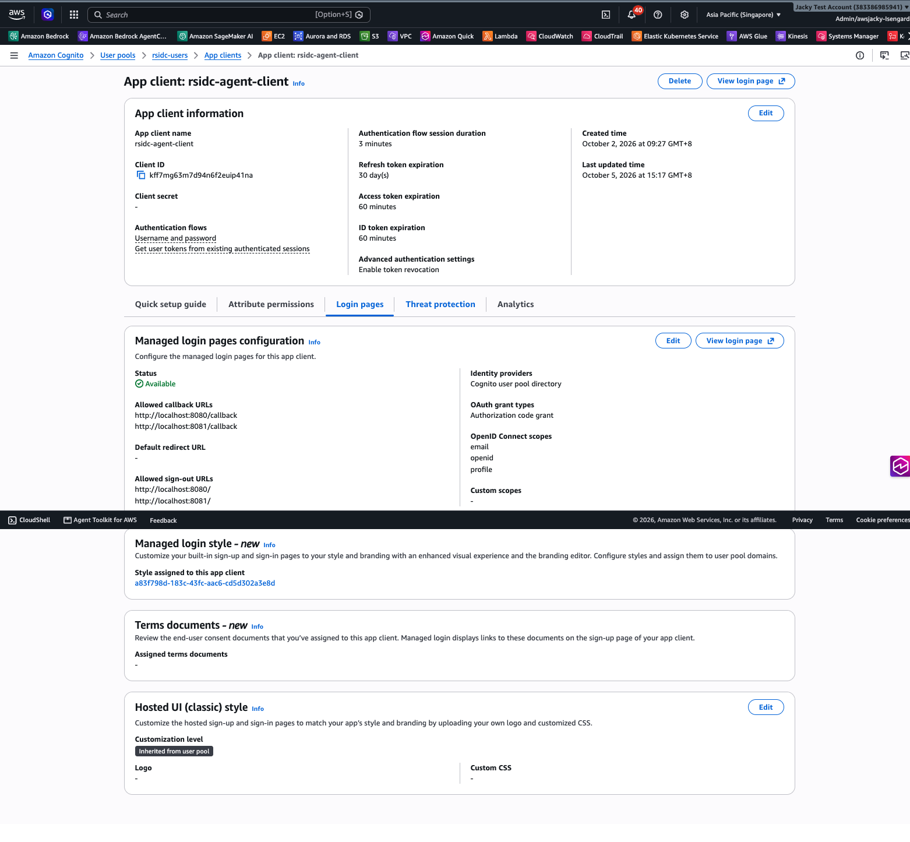
Verification
| Check | Command | Expected | Result |
|---|
| code flow + both localhost callbacks; password auth kept | aws cognito-idp describe-user-pool-client --region $RT_REGION --user-pool-id $COGNITO_POOL_ID --client-id $COGNITO_CLIENT_ID --query 'UserPoolClient.[AllowedOAuthFlows[0],join(`,`,CallbackURLs),join(`,`,ExplicitAuthFlows)]' --output text | code\s+http://localhost:8080/callback,http://localhost:8081/callback\s+.*ALLOW_USER_PASSWORD_AUTH | PASS |
Actual output: code flow + both localhost callbacks; password auth kept
code http://localhost:8080/callback,http://localhost:8081/callback ALLOW_REFRESH_TOKEN_AUTH,ALLOW_USER_PASSWORD_AUTH
Findings
- OBO enforces IdC per-user access in Redshift (16/16 matrix). The runtime role has no Redshift permission; every session runs as
AWSIDC:<user>. - External JWTs are single-use at IdC; the agent exchanges once per sign-in (history/001).
- An Allow-only IdC app ActorPolicy did not stop same-account admins; fixed with an explicit Deny (history/002, verified in step 7).
- 2LO bypasses per-user controls by design: every user, including one with no grants, saw all rows with PII via
svc_reporting (step 11). - 3LO: Token Vault isolation and session binding work; a shared IdP browser session can store another user's token, mitigated by the agent identity guard (history/003).
prompt=login via customParameters stored no token (observed). - Console pitfalls (recorded in the aws-deploy-evidence skill): IdC tabs don't change the URL; Gateway deep links redirect to home; IAM inline policies must be expanded; full-page shots can hide a field behind the sticky footer.
Teardown
infra/run.sh ./infra/99-teardown.sh (asks for delete rsidc) deletes everything above in reverse order, including the Redshift cluster without a final snapshot. The pre-existing IAM Identity Center instance, users and groups are not touched. Running cost while deployed ≈ USD 0.72/hour.